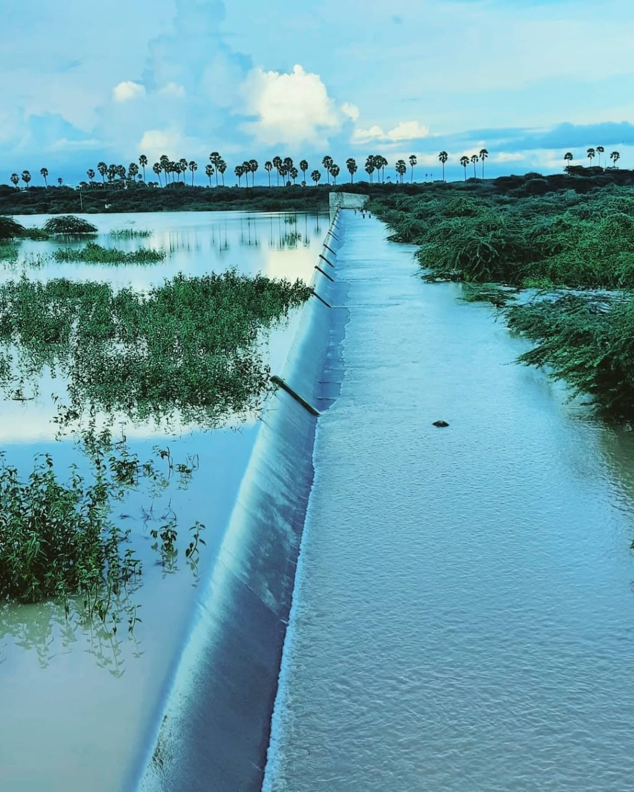

VILATHIKULAM
VAIPPAR RIVER

The Vaippar River flows near Vilathikulam in the Thoothukudi District of Tamil Nadu. It originates from the Varusanadu Hills in the Western Ghats and travels eastward through Virudhunagar and Vilathikulam Taluk before joining the Bay of Bengal near Vembar village.
In the Vilathikulam region, the Vaippar River is an important source of irrigation for nearby villages and farmlands. Although it is a seasonal river that often remains dry during summer, it plays a vital role during the rainy season by supporting agriculture and replenishing local water bodies.
The river also holds cultural and environmental importance, as it connects several rural communities and sustains the natural ecosystem around Vilathikulam.